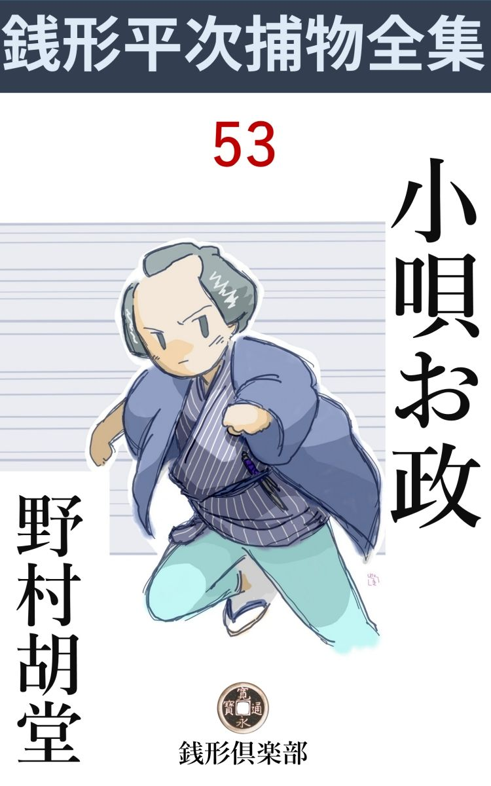
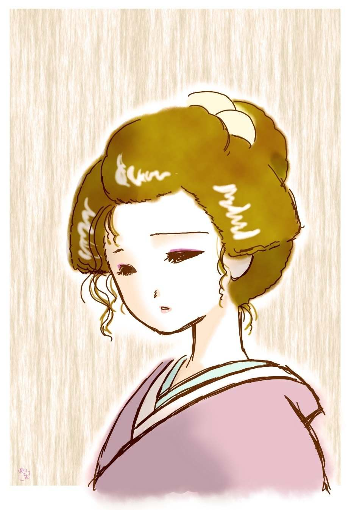

| 小唄お政: 銭形平次捕物全集第53話 (銭形倶楽部) | |
| 野村胡堂 | |
| ZENIGATA CLUB (2018) | |

一
「八、大層手前 は意気になったな」
「からかっちゃいけません、親分」
八五郎のガラッ八は、あわてて、膝小僧を隠しました。柄 にない狭い単衣、尻をまくるには便利ですが、真面目に坐り直すと、帆立 て尻 にならなければ、どう工面をしても膝小僧がハミ出します。
「隠すな、八、ネタはちゃんと挙がってるぜ」
銭形平次は構わずに続けました。
「へッ、へッ、どの口のネタで？」
「いやな野郎だな、顎 なんか撫でて、------近頃手前 、遠 吠 の稽古をするってえ話じゃないか」
「遠吠は情けねえ。誰がそんな事を親分にいい付けたんで」
ガラッ八は少しばかり意気込みました。
「手前の伯母さんだよ。------今朝お勝手口へ顔を出して、お静に愚 痴 を聞かせていたぜ------酒や女の道楽と違って、若い者の稽 古 所 入りが悪いではありませんが、家へ帰って来て唸 られると気が滅入ります。糠 味 噌 の蓋 に仔細はございませんが、あんな調子っ外れの遠吠を聞かされたら、どんな気の強い娘も寄りつかないだろうと思うと、可哀想でなりません。御存じの通り、あれはまだ独り者ですから------だとさ。どうだい八、伯母さんは苦労人だろう。あんまり心配さしちゃならねえよ」
「チェッ、憚 りながら娘っ子除けの禁 呪 に小唄をやっているんだ。心配して貰いたくねえ」
ガラッ八はそう言いながらも、耳の後ろをポリポリ掻いております。
「そうだろうとも、だから俺は言ってやってよ。------伯母さんの若い時と違って、この節はあんなのが流 行 るんだ------ってね、小唄一つ歌うんだって、鼻っ先や喉で転がすんじゃねえ。八の野郎は胆っ玉で歌うに違げえねえ。------」
銭形平次に悪気があるわけでなかったのですが、伯母の口 吻 から察して、ガラッ八の八五郎が小唄の師匠に気がありそうにも取れたので、それとはなしに脈を引いて、意見をするものなら、今のうちに意見をしようと思ったのです。
「親分、本当のことを言うと、こいつにはワケがありますよ」
「そうだろうとも。二日も行かなきゃ、師匠 の小唄お政が、迎えをよこす程だって言うから、ワケだって大ありだろうよ」
「嫌だね。伯母さんが、そんな事までブチまけたんですかい」
「人に意見などをする歳じゃねえが、小唄お政じゃお職過ぎる。止す方が無事だぜ、八」
銭形平次はようやく真顔を取戻しました。からかったり、ふざけたり、叱ったりするうちにも、子分の八五郎を思う真情が、行きわたらぬ隈なき心持だったのです。もっとも、親分子分といっても、歳から言えば、幾つも違わない二人です。時々真剣さが顔を出してくれなければ、際限もなく洒落 のめして、隔 ても見境いもなくなりそうな仲でもあったのでした。
「それは心得ていますよ、親分。芝居小唄の千之介、六郎兵衛はともかく、江戸じゃ、お寿 とお政は女師匠の両大関だ。吉原から浅草一円、柳橋へかけての弟子だけでも、千人ずつはあると言われるお政が、下っ引のあっしなんかには、洟 も引っかける道理はありませんがね」
八五郎の話は妙に筋が通ります。
「------」
平次はうさんな顔を挙げました。伯母から聞くと、馬道のお政の稽古所へ、日参しているほど取上気 せた八五郎に、こんな分別があろうとは思われなかったのです。
「仔細 あって命が危ない、------お願いだから、毎日来て見てくれ------って言うんで、まさか十手を懐中に突っ張らかして稽古所を見張ってるわけには行かねえ。親分の前だが、この八五郎も馬鹿になったつもりで、毎日馬道に通っちゃ、精一杯のドラ声を張り上げているんですぜ、へッ」
八五郎はこう言って変なところに苦笑を漏 らしました。こうは言いきったものの、少しは後ろめたさもあったのでしょう。
「そうかい、そいつは知らなかった。お政の顔を見ながら、間の抜けた小唄なんか唸 って、実は大望があったわけだね。いや、恐れ入ったよ、八」
「親分、まだ、そんな事を」
「だから、その大望を聞こうじゃないか。江戸二人師匠と言われた小唄お政が、命にかかわるほど思い詰めたなら、さぞ口 舌 にも節が付くだろう」
平次はまだ本気にはなりきっていない様子です。
「だがね親分、お政が二度も殺されかけているんですぜ」
「何だと？」
話はそれでも、次第に軌道に乗って行きます。
二
その頃は隆達 小唄や、平九 節小唄の勃興期 で、江戸にもようやく名人と言われた女師匠が現われるようになっていました。
山谷 のお寿 と、馬道のお政は、その中でも有名で、どららも若く、どちらも美しく、芸妓、素人の隔 てなく、男弟子も、女弟子も取って、多勢の狼連 と、少数の有力な旦那衆 に取巻かれ、少なくとも表面だけは、派手で陽気で、この上もなく結構な暮しをしているのでした。
二人の間には、自然に競争が起りました。同じ芸道にいそしむ仲で、他 所 眼 には、至極うち解けて見えましたが、腹の中では鎬 を削り合って、一人でも弟子を多くし、少しでも評判をよくしようと言った、両雄並び立たぬ心持でいたに相違ありません。
その間の消息を八五郎はこう説明するのです。
「お政は打ち明けてお寿のせいとは言やしませんが、去年の暮には、大さらいの晩、危うく水 銀 を呑まされるところを、弟子の浜名屋又次郎さんに助けられ、今年の夏は涼船から突き落されたのを、船頭に引上げられたと言いますぜ」
「なるほど、そいつは物騒だ。------それで、用心棒の代りに手前 を呼んで、伯母さん困らせな小唄を仕込んでいると言ったわけか」
「早く言えばそうなんで」
「気取って遅くなんか言うから解らなくなるじゃないか」
平次もここまで聞かされると、江戸名物の小唄お政の命が心配になります。
「親分、お政は可哀想じゃありませんか。こうしているうちにも、どこから、どんな術 で相手が来るか毎日ビクビクもので暮していますよ」
「お政の命を狙うのは------まさか、お寿じゃあるまい」
平次はまたこんな事を言うのでした。
若くて美しくて、ともすれば、先輩のお政の人気を奪いそうにするお寿は当面の仮想 敵 には相違ありませんが、この市 井 の芸術家お寿の、なよなよとした夕顔のような淋しい美しさと気品のある芸を知っているだけに、平次も急には疑う気にならなかったのです。
「大さらいの時は、お政とお寿がいっしょでしたよ。お政が一とくさり歌って、薄暗い楽屋へ帰って、湯呑の湯を呑もうとすると、そこにいた浜 名 屋 の次男坊の又次郎が、師匠の手を押えて止めたそうです。------その湯は変だから、止す方がいいって------」
「------」
「縁側へ持って行って見ると、中にはギラギラと水 銀 が沈んでいるんだそうじゃありませんか。懐中鏡の裏の紙を剥 して、その水銀を湯呑へ入れたに違いありません。ところでギヤマンの和蘭 鏡 を持っている者は、そこにはたった二人しかいなかったと言います。一人はお政で、一人はお寿 ------お政は自分の湯呑へ自分の鏡の水 銀 を入れる筈はありません」
「------」
平次は大きくうなずきました。
硝子製の鏡は非常に珍しい時代ですから、水銀の貼り方も至って粗末で今日のようにエナメルで固めたものでなく、鏡の裏へ紙に延して当て、僅かに枠 で押えたものだったのです。今の医学ではあまり信じられませんが、------水銀を呑めば、声が潰 れると一般に信じた時代、小唄の師匠に致命的な打撃を与えるためには、そんな事をする者もあったのでしょう。
「大さらいの場所は？」
「山谷の清 松 の二階を打 っこ抜いたそうですよ」
「それから、涼船の一件は？」
平次の探求欲は活溌に働き始めました。
「この時もお寿といっしょで、------お蔵前の山口屋が、二人を伴れて柳橋から船を出しました。両国の下へ舫 って、歌う、飲む、踊るの大騒ぎです」
「手前もいっしょかい」
「とんでもない。岡っ引きがいっしょだった日にゃ、灘 の生一本が、大川の水みたいになる」
「大層物事に遠慮するんだね」
「とにかく、さんざん騒いだ揚句、無理強いの酒が廻って苦しくてたまらないから、お寿を誘 って、お政は舳 へ出たそうです」
「お政の方が誘ったんだね」
「おかしいのはそこだけですが、誘われたお寿がはっきり言うんだから嘘じゃないでしょう。お政は何とも言いません、が、舳で風に吹かれているうちに、川へ落っこった事だけは確かで」
「落っこったのか、お政が？」
「それもお寿の言い草で、------多分酔った顔を風に吹かれて目が廻ったんだろう。お政さんはフラフラッとすると、真っ黒な水の中へ落ちた------とこうなんだそうですよ。もっとも、お政に言わせると、呑んだと言っても、川へ落ちるほど酔ってはいなかった。好い心持で夜風に吹かれていると、いきなり後ろからドンと突かれたような気がする------とこうです」
「そこにはお寿とお政の外には誰もいなかったのかい」
「山口屋と取巻きの連中は屋根の下で、お燗 番 と船頭は艫 でさ」
「成程な」
「お寿はあんまりびっくりして声も出なかった。ア、ア、と言ううちに、五六間流されたお政が、幸い通り掛かった他の涼船の船頭に引上げられて、散々水は呑んだが、命だけは助かったそうですよ」
「それは危ないな、お政は水心がなかったのか」
「小唄の師匠が泳ぎを知っているわけはありません。もっとも、突き落されると、前もって解っておれば、泳ぎの稽古位はしたかも知れませんが------」
「皮肉を言うな、八」
「ところで親分、これがあべこべだと話になりませんよ。お寿は佃 で育って、あんな華 奢 に見えるくせに、泳ぎは河童 の雌 ほどうまいそうですよ」
「河童に雌があるのかい」
「雄 がありゃ雌だってありますよ」
無駄は入りますが、ガラッ八の話は次第に面白くなります。
「それから、八五郎さんの弟子入りとなって、一日顔を見せなきゃア、呼出しが来ると言うわけか」
「へッ」
「満更じゃねえな、八。小唄お政に呼出しをかけられるのは、一千人という弟子の中でも、手前 一人だろう」
「まだありますよ」
「誰だ」
「浜名屋の冷飯 食 いで------」
「又次郎か」
「それから山口屋の旦那」
「大層気が多いんだな、それがお政の情夫 と旦那か」
「だからあっし なんか、本当の用心棒で」
「気が弱いじゃないか、------今日もこれから行くんだろう」
「へッ、行かなきゃア、又呼出しだ」
八五郎は少しばかり脂下 りました。
「厭な野郎だな------まアいい、お政に逢ったら、そう言ってくれ。平次も弟子入りをしたいが、どうだろう、今日明日はいけないが、明後日 あたり行って見るから------って」
「本当ですかい、親分、それは」
ガラッ八の鼻の下は長くなりました。
「誰が嘘を言うものか、放って置くと、大変な事が起りそうだ。用事が一応片付いたら、きっと行って、この平次が見張ってやる。口幅ったい言い草だが、大船に乗ったつもりで待っているようにって言うんだよ」
「驚いたな」
ガラッ八は呆気 に取られました。大きな口を利くのを、馬鹿みたいに思っている平次が、こんな自 惚 れきった事を言う真意が呑込み兼ねたのです。
三
「大変ッ、親分」
ガラッ八は、翌る日の晩、鉄砲玉のように飛込んで来ました。
「何が始まったんだ。相変らず騒々しい」
平次はそう言いながらも、充分期待していたらしい顔を挙げたのです。
「お政がやられましたよ、親分」
「引掻かれるか、髪でも毮 られたんだろう」
「それどころじゃねえ、親分------あ苦しい、浅草からここまで駆けて来たら、物が言えねえ」
「馬鹿、それだけ口が立ちゃ沢山だ、早く言ってしまいな------まさかお政が殺されたんじゃあるまいな」
「殺されましたよ」
「何だと」
「この眼で見て来たんだ。間違いっこはねえ、もう三輪 の万七親分がやって来て、お寿 を調べていますぜ------あんなにお政に頼まれたのに、少しの油断でやられましたよ。三輪の親分に下手人を挙げられちゃ、この八五郎の男が立たねえ、親分、お願いだから行って見て下さい」
八五郎はもう、銭形の袖を引いて、力ずくでも引張り出そうとしているのです。
「三輪の兄哥の縄張だ。そいつは御免蒙 ろうよ、八」
「親分、それじゃお政が可哀想だ。いえ、この八五郎が可哀想じゃありませんか。あんなに頼まれた癖 に、指をくわえて引込んじゃ」
「よしよしお前には敵 わねえ。------とにかくちょいとだけでも覗いておこう。この殺しは一風変っていそうだ」
何を考えたか平次は、思いの外気軽に支度をすると、八五郎といっしょに、浅草へ急ぎました。
「お政の家なら馬道じゃないか」
馬道を横に見て新鳥越 の方へ行こうとするガラッ八を呼止めました。
「それが不思議なんで、------お政は昼過ぎから山谷のお寿のところへ行って、珍しく油を売り、薄暗くなってから、お寿に送られて新鳥越まで来て、正法寺 の前で別れたんだそうですが、これはお寿の言い分ですよ、親分」
「------」
「その正法寺前の路地で、血だらけになって死んでいたんです」
「誰が見つけたんだ」
「提灯 を持って迎いに行った権助が、新鳥越の路地に人立ちがあるんで、何の気もなしに覗いて見ると、師匠のお政が殺されているんだそうじゃありませんか。町役人に届けて、あわてて帰ったので、馬道にいた弟子が二三人、宙 を飛んで行って見ました」
「誰と誰だ」
「あっし と浜名屋の又次郎と、権助と、染物屋 の勘次と、------そんなものでしたよ」
そんな話をしながら、平次とガラッ八が現場へ駆けつけた時は宜い塩梅に検屍が済まないので、路地の死体もそのまま、番太の老爺が立番をして、町内の弥次馬が、怖 い物見たさの遠巻きに、月の光にすかしております。
「筵 を取って見な、八」
「へエ------」
死体に掛けた筵を取ると、番太は心得て提灯を差出しました。
「あッ、これはひどい、------何という虐 たらしい事をしたんだ」
平次が言ったのも無理はありません。
月の光に蒼ずんだお政の死顔は、全く思っても見ない痛々しいものだったのです。
何分にも凄まじい血です。
晴着らしい単衣 の胸から腰まで蘇芳 を浴びたようになって、左顎の下へ、斜に開いた瘡 口 は、それほど大きいものではありませんが、ようやく脂の乗ってきた豊満な大年増の顔は、蠟 のように蒼ざめて、月の光と、提灯のあかりの中に、言いようもない不思議なニュアンスを醸 し出しております。
美女の死体の凄まじさに、平次もさすがに躊躇 いましたが、しばらくすると、番太の提灯をガラッ八に差出させ、馴れた順序で、髪形から、着物の崩れ、手足の投げ出された方向から、血の流れよう、傷口の模様まで、恐ろしく念入りに調べ始めました。
「八、何か掴んでいるようだ。左の手を開けてみな」
「へエ------」
八五郎はお政の死体の冷たい掌 を開けました。
「ありましたよ、親分」
「何だ」
「毛」
「どれどれ」
ガラッ八のつまみ上げたのを見ると、紛 れもなくそれは女の髪の毛です。懐紙を出して、その上へ置くと、長短不揃いなのが三本、いずれも少し赤くて、縮 れているのがはっきり判ります。
「お寿 の毛ですよ、親分」
「判っているよ」
美女お寿は、類 稀 な姿と顔形に恵まれながら、何の因果か赤くて縮れた毛を持っているので有名だったのです。

四
「刃物は？」
平次は四方 を見廻しました。こんな場合、よっぽど落着いた悪党でないと、大概血だらけな刃物は捨てて行くものです。
「三輪の親分も捜しましたが、見当りませんよ」
番太の老爺はそう言います。
「八、念入りに捜して見てくれ。下水の中でなきゃ、塀 の中だ」
「よしきた」
八五郎は番太の提灯を借りると、いきなり下水の中へ首を突っ込みました。
「かき廻しちゃ何にもならない。下水を念入りに捜すのは明朝の事にして、塀の中を見るんだ」
「へエ------」
がしかし、それも無駄でした。
「八、あれは何だ」
しばらくすると、平次は月の光に白々と見える、右手の長屋の板庇 の上を指しました。
「光るようですね、親分」
「梯子 を借りて見てくれ、雨が降った筈はないし、------庇の上の光るのは変だ」
平次に言われるまでもありません。八五郎は気軽に梯子を借り出して、庇へ掛けると、筒抜けに驚きの声をあげます。
「親分、見つかりましたよ------血だらけの剃刀 」
「有難い、それで何もかも揃った」
柄 に籐 を巻いた、使い古しの剃刀を受取ると、平次は雀 躍 りしたい心持になるのでした。
「親分、番所へ行って見ましょうか」
「待ってくれ、ここにいるなら、お政の弟子たちに一と通り会って行きたい」
「駆けつけた顔は大概揃っていますよ。権助どん」
「へエ------」
ガラッ八の声に応じてノソリと出たのは、お政の使っている飯 炊 き、庭も掃 けば使い走りもすると言った、調法至極な男です。
見たところ五十幾つ、形振 構わず小金を溜めるより外に望みのない人間で、信州の土の匂いのすると言った風格には、お政を殺す動機などを持っていそうもありません。
「それから、又次郎さん」
「へエ------」
浜名屋の冷飯食い、飛抜けた道楽者で、親兄弟も構いつけない代り、女の子の達 引 には不自由をしない男、二十七八の若い燕型 、これは一番疑われそうな人間です。
「師匠が殺された時分、どこにいなすった」
と平次。
「馬道に申刻 時分から先刻まで、師匠の帰りを待っていましたよ。八五郎さんもよく御存じで------」
又次郎は少しおどおどしておりますが、大して悪びれた色もありません。
「又次郎さんの言うのは違いありませんよ、親分、笊 碁 を打っていたんで」
「中座しなかったかい」
「ちょいと、煙草を買いに行きましたが------」
言いかけて又次郎は口を緘 みました。馬道からここまでは一と走りです。煙草を買うことにして、人一人殺しに来られない筈はありません。
「煙草入は？」
「------」
黙って平次に渡した煙草入を開けると、印伝 の叺 には一パイ新しい刻みが詰っております。
平次はそれを又次郎に返すと、もう一人染物屋の勘次と言うのに会いました。これは又次郎よりは少し若く、夕方からガラッ八の相手をして、馬道から一歩も出なかったことが判りました。
「さア行こうか、八」
平次はそこをきり上げて、山谷の方へ向いました。
「又次郎が怪しくはありませんか、親分」
それを追っかけてささやく八五郎。
「何とも言えない。が、万事はお寿 に逢ってからの事だ。------それとも、又次郎はお政を怨んでもいたのか」
「そんな事はありませんが、お政が近ごろ旦那の山口屋の機嫌を取り過ぎるんで、又次郎も面白くない様子でしたよ。もっとも、山口屋も浮気で、お政に飽きて、山谷のお寿のところへ繁々 行くようになったそうですから、お政にしてみれば、冷飯食いの又次郎の機嫌などを取っちゃいられなかったでしょう」
ガラッ八の話を聞きながら、平次は何やら深々と考えております。
五
番所へ行って見ると、三輪の万七とお神楽 の清吉が、お寿 の責めに大童 でした。
「おや、銭形の、大層耳が早いんだね」
万七は顔を上げて、皮肉と敵意とをこね混ぜたような、薄笑いを浮かべました。
「お政は八五郎の師匠だそうでね、放ってもおけないから覗いただけさ。ところで下手人の当りは？」
平次は穏やかにこう言うのです。
「この女さ、間違いっこはねえ、が------旦那方が見えるまでに、口を開けさせなきゃ後が面倒だ」
万七はそう言いながら、板敷の上に崩折れた、小唄お寿の痛々しい姿を指さしました。
まだ二十五六、お政よりは六つ七つ若いでしょう。ちょっと見は二十二三が精々、色白で、華 奢 で、なよなよとした陰影の多い美しさは、豊満で肉感的で、少し媚 態 をさえ持ったお政とは、およそ正反対な感じのする女でした。
羅物 を涼しく着て、板敷に双手 を突いた姿、縮れた赤い毛をたった一つ難にして、このまま、中条姫や、照手姫の絵巻物の中に納められそうな姿です。
「お寿が下手人？ 一応俺もそう思ったが、腑に落ちないこともあるよ、三輪の」
平次は下手 に出ました。
「お政の死骸の手に、縮れっ毛が握ってあった筈だ。五六本のうち、三本だけは検屍の御役人にお目にかけるつもりで残して置いたが、銭形の兄 哥 があれを見落す筈はあるめえ」
万七は顧 みてお神楽の清吉とうなずき合います。
「これかい、三輪の」
平次は素直に懐ろ紙に包んだ毛を出しました。
「その毛に気がつきゃ文句はあるめえ。それにお政は、清松の大さらいで水 銀 を呑まされ損 ったことも、涼船から突き落されたことも、銭形兄哥は聞いている筈だ」
「------」
「お政の喉 の傷は薄刃の刃物で斬られたに違げえねえ。多分剃 刀 だろう。剃刀なら女でもあれ位のことは出来るぜ。------清吉をやって、お寿の家中を捜させたが、けさ妹のお文が使ったという、一番よく切れる剃刀がなくなっているぜ、------多分お寿がお政を送って行くとき持出し、新鳥越の路地で使って、血だらけになったのをどこかへ捨てたんだろう------その剃刀さえ見つかれば、口書き拇 印 がなくたって、処 刑 台 に上げられる女だ」
万七の言うのは、常識的で無理のない推理でした。
「その剃刀は多分これだろう」
平次は何の蟠 りもなく、血染の剃刀を出しました。
「あッ、どこで、それを」
「現場近くの庇 の上に投り上げてあったよ」
「そうか、下ばかり捜していたが------」
万七は忌々しそうに舌打ちをします。
「お寿、------この剃刀に見覚えがあるだろう。正直に言ってくれ」
と平次。
「------」
一と目、お寿はサッと顔色を変えました。血に染んで斑 々 としてはおりますが、柄に巻いた籐や、使い込んだ刃の減りに、見違えようはなかったのです。
「どうだ」
「ハ、ハイ、------どうしてそんな所へ行ったんでしょう」
「お寿の品に相違あるまいな」
「ハイ」
これはお寿に取っては罪の白状も同じことでした。それを聞く万七はもう袖の中の捕縄をまさぐっております。
「銭形の、お蔭でこの女の口を開けさせたよ。剃刀が出さえすれば、こっちのものだ」
「待ってくれ、三輪の兄哥、------お寿の家から剃刀を盗み出せる曲者なら、鏡台の抽 斗 か屑籠から抜け毛を持出すのは何でもないぜ」
「何だと、銭形の」
万七は仰天しました。平次の言葉があまりにも変っていたのです。
「三輪の兄哥、------気がつかない筈はないが、この毛は皆な古い抜け毛だと思うが------」
「えッ」
「根のある毛が一本もないし、両端が細くなって枯れているところを見ると、切れた毛や毮 り取った毛でもない」
「下手人はお寿の家から抜け毛と剃刀を盗み出し、お政を殺してからわざと掴ませたというのかい」
と万七。
「そうでも考えなければなるまいよ」
「ところが、今日は稽古が休みだ。お寿の家へ行った者は一人もありませんぜ」
お神楽 の清吉は口を出しました。
「本当か、お寿」
と平次。
「------」
お寿は悲しくもうなずきます。
「朝まで確かにあった剃刀が、誰も怪しい者の行かないお寿の家から飛出して、血染めになって、新鳥越の路地の庇 の上に------梯子を掛けなきゃ届かないところに投り上げてあったのはどういうわけでしょう、銭形の親分」
清吉の調子は存分に皮肉です。
「だが清吉兄哥 、お政の傷は前から斬ったものじゃねえ。お寿のような華奢な女に剃刀で前から切られるのを待っているお政でもなかろうし、第一あんなに前から切っちゃ、返り血を浴びて大変だ」
「------」
平次は板敷に崩折れたままのお寿の清らかにさえ見える姿を見やりました。どこを捜しても、血の痕などはありません。
「後ろへ廻って、右逆手 で切ると、あんな具合になるが、後ろから斬られながら、お政の手はどう伸びて下手人の髪を掴むんだ」
平次は仕方噺 になりました。なるほど、後ろから逆手に持った剃刀で喉を切られながら、相手の髪を掴めようはありません。
「なるほど、こいつはむずかしい」
ガラッ八もやってみましたが、どうもうまく行きそうもないのです。
「だいぶ面白そうだな」
そこへ顔を出したのは、見廻り同心の南沢鉄之進でした。
「旦那、ちょうどいいところへ」
平次と万七は迎え入れて、今までの経過を細々 と説明します。
「なるほどどっちにも理屈はある。が、こう証拠が揃っちゃ、お寿を許すわけにも行くまい。ともかく、南の御役所へ伴れて行って、平次にはもう一と働きして貰うことだ」
南沢鉄之進はそう言いながら清吉を顧 みました。お寿に縄を打てというのでしょう。
六
平次はその足ですぐお寿の家へ行きました。妹のお文と内弟子が三人、下女が一人、更くる夜を寝もやらず、不安と疑 惧 とに顫えていたのです。
「銭形の親分さん、どうぞ、お願い、------姉を助けて下さい、人なんか殺せるような姉じゃございません」
飛んで出たのは、妹のお文でしょう。丸々と肥った十八九の娘、姉のお寿とはちがって、激情的で一本調子で、その代り少しお転婆です。
「それはよく解っているよ。助けようと思えばこそやって来たんだ、------隠さずに教えてくれ。第一番に訊きたいのは、今日は本当に誰も来なかったのか」
と平次。
「お稽古の休みは、なるべく人に来て貰わないようにしています。姉はあの通り、身体も心持も弱い人で、時々は一日のんびりと休ませなきゃなりません」
とお文。
「お政が来た筈じゃないか」
「でも、それは勘定に入らないでしょう。殺された人ですもの」
「なるほど、そう言えばその通りだ」
平次は苦笑しました。その謎 めいた言葉の真意は誰にも解りません。
「剃刀が今朝まで鏡台にあった------とお神楽の親分に申上げたのは、ありゃ間違いですよ。この二三日、誰も使った者がありません。今朝私が使ったのは、なくなった方のだと思ったのは間違いで、新しい籐も何にも巻かない剃刀の方でしたよ、親分さん」
お文は一生懸命でした。姉思いらしい一途さは、涙ぐんだ眼、わななく唇にも溢れます。
「それがいけないよ、------そんな拵え事を言うから、お寿が疑われるんだ。物事はありのままに言うに限る。なくなった剃刀が今朝まで使っていた品なら、それでいいじゃないか。下手人はどうせ巧 みに企 んだ仕事だ。皆なの思いも寄らない事をしているに違いない」
「------」
噛んで含めるような平次の言葉に、かりそめの拵え事を言ったのを愧 じて、お文は丸い顎を襟に埋めました。
「ところで、お政は帰るとき、髪乱れか、化粧崩れを直した筈だが------」
「え、そこの鏡台でしばらく顔を直していました」
「ギヤマンの懐中 鏡 があった筈だが、見せてくれないか」
「鏡台の抽斗 にありますよ」
「------」
平次は桐の枠 に入れた小さいギヤマンの懐中鏡を取上げました。枠にも鏡にも何の変りもなく、裏を開けて見ると、水銀は少しこぼれておりますが、わざと取ったというほどではありません。いや掻き取ったにしてもほんの少しばかりだったのでしょう。
「近ごろ山口屋の主人が来るそうだが、お寿の世話でもするつもりだったのかい」
「さア------」
お文はさすがに言い渋りました。蔵前の大通 と姉の情事 を岡っ引の耳へなど入れたくなかったのでしょう。
「正直に言う約束じゃないか」
「それは、いろいろ仰しゃって下さるそうです」
「泊って行くような事は？」
「そんな事はございません。お酒を召上がると、いい御機嫌でお帰りになります」
「それからもう一つ訊くが、今日お政がやって来たのは、何か差迫っての事でもあったのか」
「大さらいの相談のようでした」
「来ると、いつでも、あんなにゆっくりいるのかい」
「いえ、三年に一度もいらっしゃいません。珍らしい事で、姉も大変喜んでいる様子でした。近ごろ二人の仲が、何となく面白くなかったものですから------」
言いかけてお文はふと口を緘 みました。言ってはならぬ事に触れたと思ったのでしょう。
「有難う、あまり心配しない方がいいだろう」
平次はどっちともつかぬ事を言って、夜更 の街を、神田へ帰って来ました。
七
「親分、いろいろの事が解りましたよ」
ガラッ八が神田の平次の家へ飛込んで来たのは翌る朝でした。
「鏡の事から先に話してくれ」
平次はガラッ八の饒舌 を整理するように、こうきり出します。
「お政の懐中鏡は、水銀 がピカピカついていますよ、鵜 の毛ほどの傷もない位で、------七八年前に二両二分で買ったそうだが、物持ちのいい女じゃありませんか」
「それから、浜名屋の又次郎はどうした」
「師匠に死なれて悄気 返っていますよ。首くらい縊 り兼ねない様子で」
「嘘だろう、あんなに浮気な女共に騒がれる男は、薄情なところがあって、容易に死ねないものだ」
「へエ」
「お前などは捨てられると死ぬ方さ、ね、八」
「そんな心持になって見たいね、親分」
「無駄は止して、山口屋は顔を見せないか」
「金持は薄情ですね、七里潔 灰 で」
「涼船でお政を助けた船頭が解ったか」
「こいつは大手柄でしたよ。朝っから飛廻ってようやく突き留めました。浜町の大野屋の船頭で、喜七という------」
「あの晩通り合せてお政を助けたのか」
「それが不思議なんで、客が一人で船を出させて山口屋の船から離れないように漕 がせていたそうですよ------こんな晩は水に落ちる人があるかも知れないから気をつけてくれ、------と言ったそうで」
ガラッ八の話は怪奇にさえなります。
「その客は誰だ、解っているだろう？」
「それが解らないんで、暑いのに頬 冠 りを取らなかったと言いますよ。それに、お政を水から救い上げると、すぐ姿を隠してしまったそうで」
「フーム」
平次は唸りました。容易ならぬ企 らみが匂います。
「船頭はいつでも来てくれる事になっていますよ」
「それじゃ気の毒だが馬道へ伴れて行って、お葬式 の支度で集っている人間の首実検をさしてくれ。その中から頬冠りで船を雇った人間が見つかりゃ、占めたものだ」
「そんな事ならわけはありません、親分は？」
「横山町の唐物問屋を探して、オランダ物の直しをする家を見つけて来るよ」
平次の言うことは、まだガラッ八には謎でしたが、山が見えたことだけは確かのようです。
その日の夕刻、平次は馬道のお政の家へ行きました。
「何を言やがる。つい先月、この船頭を頼んで、涼船から落されたお政を救い上げたのは又次郎だ。去年の暮に、水 銀 を湯呑の中から見つけたのも又次郎さ、------昨夜煙草を買いに出た序 に、何をしたか解ったものじゃねえ、一応調べるに不思議があるものか」
漏れて来るのは、ガラッ八の大啖呵 です。
「八兄哥 、たいそう大きな口をきくが、こいつは又次郎の知ったこっちゃないよ。又次郎は二度もお政を助けただけだ、お政殺しに関 係 があるものか」
そう言うのは三輪の万七の子分のお神楽の清吉でしょう。
「関係のないのはお寿も同じことだ。とにかく俺は又次郎をしょっ引いて、訊いて見たいことがある。縄張話は後でつけようじゃないか」
ガラッ八は突っ張りました。
「八兄哥、お寿はもう白状しているんだぜ。この上、変なことをするのは無駄骨折りだ。銭形の兄哥にもそう言ってくんな。小唄の師匠同士、芸の上の嫉 みから、お政を殺したに相違ありません、と、ツイ先刻申上げてしまった。お寿の外に下手人などがあるわけはねえ」
これは三輪の万七でした。
「------」
八
「御免よ」
その争いの真ん中へ、銭形平次は入って行きました。
「あ、親分、頬冠りの客は又次郎ですよ」
ガラッ八は部屋の隅に小さくなっている浜名屋の又次郎を指しました。
「銭形の、------俺は喧嘩を売りに来たわけじゃねえ、八兄 哥 がお政の葬 式 の支度の最中へ飛込んで、又次郎を縛るの、山口屋が下手人だろうのと、無法な事を言うからツイ縄張話を持出したまでの事だ。悪く思ってくれちゃ困るぜ」
三輪の万七は静かですが、皮肉な調子でした。
「有難う、三輪の、八の野郎が何か夢でも見たんだろう。又次郎にも手落ちはあるが、下手人じゃない。山口屋などは最初から何の関 係 もなかったのさ」
「そーれ、見るがいい、八兄哥」
清吉は平次の言葉に勢いがよくなりました。
「だが、お寿にも罪はないぜ、お神楽 の」
「えッ」
「下手人は思いもよらぬ人間さ。いや幽霊と言った方がいいかも知れない------可哀想にお寿は何にも知らねえ」
「そんな筈があるものか。人の仕事にケチをつけるんじゃあるまいな」
三輪の万七は顔色を変えました。
「最初から筋を立てて話して見よう。違ったところがあったら、そう言ってくれ」
平次は静かに話し始めます。
「よし、聞こう」
一座は固唾 を呑みました。夕づいた陽は縁側に這って、棺の前の灯 が次第に明るくなると、生 温 い風がサッと吹いて過ぎます。
「お政は近ごろ年を取って、芸も容貌 もだんだんいけなくなって来た。人気は皆な、若くて綺麗なお寿に集るし、大事な旦那の山口屋まで、お寿 の方へ入り浸ってお政には切れ話を持ちかけている------。
お政は口惜 しかった。居ても立ってもたまらないほどお寿が憎かった、------お寿を一と思いに殺せば何でもないが、それでは世間の人がお寿が可哀想だと言うだろうし、殺したお政は、世間の憎しみを受けて、処刑 台 に昇らなければならない。人気稼業のお政、世間からチヤホヤされてきたお政には、それでは我慢が出来ない。死んでも人気は落したくなかった。------いろいろ考えた末、第一番に、お寿に水 銀 を呑まされ損なったと世間に言いふらそうと思いついた。自分のギヤマンの懐中鏡の水銀を剥 がして、清松の大さらいのとき、わざと又次郎に見つけさせるようにした------。
その証拠は、お寿の懐中鏡の水銀は傷んでいるが、わざと剥がした跡はない。お政の鏡の水銀はあんまり無傷で新しい。ギヤマン鏡の水銀は、とても五年と保 たないものだ。不思議に思って、江戸でたった一軒の、和 蘭 物 を修 繕 す家で訊くと、近ごろギヤマンの懐中鏡の水銀を貼りかえたのは、お寿じゃなくてお政だった」
一座の人々は、線香臭い中に、黙って顔を見合せました。恐ろしい沈黙の中を、平次の声だけが、低いながら凜々 と響きます。
「涼船から落ちたのも、お政の狂言 だ。この時は一人ではどうにもならないので、浜名屋の又次郎にそれとなく頼んで、引揚げて貰った。------ずいぶん命がけの仕事だが、女が思い詰めると、それ位のことは何でもない------。
お寿はだんだん世間から疑われて来た。が、まだ仕上げが出来なかった。そこで八五郎を手なずけて、たくさんの証拠を見せ、お寿を疑わせるように仕向けさせた。が、------俺が一二日のうちに行く------と聞くと、その謀計 がばれるのが怖さに、あわてて、取っておきの仕事に取りかかった------。
昨日お寿を訪ねて、顔を直す振りをして、剃刀 とお寿の抜け毛を盗み出し、お寿へ無理にせがんで、途中まで送って貰った。時刻を測 って、暗くなるのを見越しての仕事だ。お寿と別れると、新鳥越のかねて見定めておいた路地へ入って、左手にお寿の抜け毛を掴み、右手に持った剃刀で、自分の左の喉をほんの少し掻き切った。------いや、ほんの少し掻き切るつもりだったが、手元が狂ったのと、小唄の師匠で、咽 喉 笛 を避 けたのが反って悪かった。思わず手が滑って、深く切ったのが、あの通り急所だ」
お政は咽喉笛を避けて切ったために、自分の頸動脈 を切ってしまったのでした。
「剃刀を庇 へ投り上げたのは誰だ」
三輪の万七は最後の切札を叩きつけました。
「自分の喉を切って、すぐお政が投り出した。最初から刃物を捨てるのが大事な仕事の一つと覚悟していたので、深傷 にも拘 わらず、思わず力が入って庇の上へ投り上げてしまった、最後の一念と言うものだろう」
誰ももう、何にも言う者はありません。
「仏の前で言うのも何かの功徳 だろう。お政は掻き傷を拵えてお寿を縛らせ、一ぺんに人気を落してやりさえすればよかったが、手が滑って死んだのも自業自得だ。------今じゃあの世で後悔しているだろう。仏に代って、俺が懺悔 してやる。みんなお政の心得違いからだ、------この殺しには誰も罪はない」
平次はそう言いきると、棺の前に膝を突いて、香を捻 りながら黙祷を捧げました。
誰も物を言いません。涼し過ぎる夕風が、お政の遺骸の前に灯 った蠟燭 を、生命あるものの如く揺がします。
（編注）
作品中には、身体の障害や人権にかかわる、差別的な語句や表現が見られますが、本書が成立した当時の時代背景等が現代とは異なる古典的な文学作品でもあり、著者が故人でもありますので、底本のままとしました。ご理解、ご諒承のほどをお願い申し上げます。
著者---野村胡堂
挿絵---萩 柚月 © 2017
初出---「オール讀物」昭和十一年七月号 文藝春秋社
底本---「錢形平次捕物全集」第三巻 河出書房 昭和三十一年六月十五日初版
編集・発行 銭形倶楽部